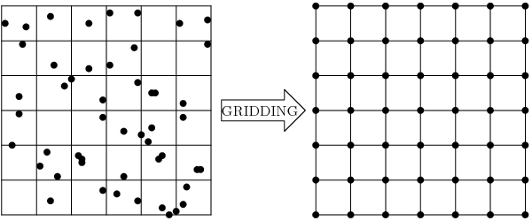

GDALグリッドチュートリアル
グリッディングの紹介
グリッディングは,散在データから正規グリッド（またはラスター画像とも呼びます）を作成するプロセスです.通常,測定地域に散在する任意のデータセットがあり,それらを正規グリッドに変換して,さらなる処理や他のグリッドとの組み合わせに使用したいと考えています.
この問題は,データ補間または近似アルゴリズムを使用して解決できます.しかし,ここでは補間に限定されません.時にはデータを補間する必要がなく,代わりに領域全体で統計値やデータメトリクスを計算する必要があることがあります.統計値自体が有用であるから,補間アルゴリズムとパラメータをよりよく選択するために使用できます.
それがGDAL Grid APIの目的です.データを補間するのを支援します（ Interpolation of the Scattered Data を参照）またはデータメトリクスを計算します（ Data Metrics Computation を参照）.
このインターフェースを使用する方法は2つあります.プログラム的には, GDALGridCreate() C関数を使用できます.エンドユーザー向けには, gdal_grid ユーティリティがあります（現在の機能の最新リストについてはそちらを参照してください）.このドキュメントの残りの部分では,GDAL Grid APIで実装されているアルゴリズムとそのパラメータについて詳しく説明します.
散在データの補間
逆距離法
逆距離法グリッディングメソッドは,重み付き平均補間器です.散在データ値を含む入力配列と,各データ点の座標および出力グリッドジオメトリを提供する必要があります.関数は,出力グリッド内の指定された位置に対して補間値を計算します.
各グリッドノードに対して,次の式を使用して結果値 \(Z\) が計算されます:
where:
\(Z_i\) is a known value at point \(i\),
\(r_i\) is a distance from the grid node to point \(i\),
\(p\) is a weighting power,
\(n\) is a number of points in Search Ellipse.
スムージングパラメータ \(s\) はユークリッド距離計算に加算項として使用されます:
ここで, \(r_{ix}\) と \(r_{iy}\) はそれぞれグリッドノードから点 \(i\) までの水平および垂直距離です.
このメソッドでは,重み付け係数 \(w\) は
GDALGridCreate() パラメータのリストについては GDALGridInverseDistanceToAPowerOptions を参照し, invdist については gdal_grid オプションのリストを参照してください.
移動平均
移動平均は,単純なデータ平均アルゴリズムです.楕円形の移動ウィンドウを使用して値を検索し,ウィンドウ内のすべてのデータ点の平均を取ります. Search Ellipse は指定された角度で回転でき,楕円の中心はグリッドノードに配置されます.また,平均するデータ点の最小数を設定できます.ウィンドウ内の点が十分でない場合,グリッドノードは空と見なされ,指定されたNODATA値で埋められます.
数学的には,次の式で表すことができます:
where:
\(Z\) is a resulting value at the grid node,
\(Z_i\) is a known value at point \(i\),
\(n\) is a number of points in search Search Ellipse.
GDALGridCreate() パラメータのリストについては GDALGridMovingAverageOptions を参照し, average については gdal_grid オプションのリストを参照してください.
最近傍
最近傍法は,補間や平滑化を行いません.単に,グリッドノード検索楕円内で見つかった最も近い点の値を取得し,結果として返します.点が見つからない場合,指定されたNODATA値が返されます.
GDALGridCreate() パラメータのリストについては GDALGridNearestNeighborOptions を参照し, nearest については gdal_grid オプションのリストを参照してください.
データメトリクスの計算
すべてのメトリクスには同じセットの制御オプションがあります. GDALGridDataMetricsOptions を参照してください.
データの最小値
グリッドノード Search Ellipse で見つかった最小値.点が見つからない場合,指定されたNODATA値が返されます.
where:
\(Z\) is a resulting value at the grid node,
\(Z_i\) is a known value at point \(i\),
\(n\) is a number of points in Search Ellipse.
データの最大値
グリッドノード Search Ellipse で見つかった最大値.点が見つからない場合,指定されたNODATA値が返されます.
where:
\(Z\) is a resulting value at the grid node,
\(Z_i\) is a known value at point \(i\),
\(n\) is a number of points in Search Ellipse.
データ範囲
グリッド Search Ellipse で見つかった最小値と最大値の差.点が見つからない場合,指定されたNODATA値が返されます.
where:
\(Z\) is a resulting value at the grid node,
\(Z_i\) is a known value at point \(i\),
\(n\) is a number of points in Search Ellipse.
検索楕円
グリッディングアルゴリズムで指定された回転楕円形式の検索ウィンドウ.3つのパラメータで記述されます:
\(radius_1\) は最初の半径です(回転角が0の場合は \(x\) 軸）,
\(radius_2\) は2番目の半径です(回転角が0の場合は \(y\) 軸）,
\(angle\) は検索楕円の回転角度です（反時計回りに回転）.

計算には,検索楕円内（境界線を含む）にある点のみが使用されます.